，r和s为实数。我们在第9章讨论过，复数可以借助坐标数字r和s表示成平面上的点。t一旦取值为复数，x(t)实际上就是平面上的函数，准确地说，应该是去掉了一个点的平面，因为在t=0时，函数x(t)没有意义。t=0时的点就是平面的原点（坐标r和s都等于零），所以，x(t)是去掉了一个点（即原点）的平面的函数。
，r和s为实数。我们在第9章讨论过，复数可以借助坐标数字r和s表示成平面上的点。t一旦取值为复数，x(t)实际上就是平面上的函数，准确地说，应该是去掉了一个点的平面，因为在t=0时，函数x(t)没有意义。t=0时的点就是平面的原点（坐标r和s都等于零），所以，x(t)是去掉了一个点（即原点）的平面的函数。1990年秋，我成为哈佛大学的一名博士研究生。想要从客座教授转变成哈佛大学的一名正式教师，获得博士学位是一个不可或缺的环节。约瑟夫·伯恩斯坦同意担任我的导师，此时，我收集的研究材料也已经足够让我完成博士论文了。阿瑟·杰斐找到研究生院的院长，院长同意对我免除在校学习两年的要求（通常，博士研究生必须在校学习两年）。这样一来，我就可以在一年之内完成博士学业，我从客座教授“降职”为博士研究生的时间也不会很长。
在这一年的时间里，我完成了博士论文。我的这篇论文研究的是一个全新的课题，它源于那年春天我与德林费尔德关于朗兰兹纲领的几次讨论。下面，我以电影剧本的形式来展现其中的一次讨论。
内景：德林费尔德在哈佛大学的办公室。
德林费尔德正在黑板前踱步，爱德华坐在椅子上记笔记，旁边的桌子上放着一只茶杯。
德林费尔德：也就是说，谷山–志村–韦伊猜想找出了三次方程式与模形式之间的联系，朗兰兹则更进一步，他猜测两者之间存在一种更具一般性的关系，其中，模形式被李群的自守表示所取代。
爱德华：自守表示是什么意思？
德林费尔德（停顿了很长时间）：现在，我们无须知道它的精确定义，你可以在阅读材料中找到。重要的是，它是李群G的一个表示，例如，球体旋转群SO(3)的表示。
爱德华：好的。那么，这些自守表示与哪些东西有关联呢？
德林费尔德：嗯，这是我们最应该关注的内容。朗兰兹预测，它们应该与另一个李群中的伽罗瓦群的表示有关。
爱德华：我明白了。你是说这个李群与李群G不是同一个群，对吗？
德林费尔德：对！这是另一个李群，叫作李群G的朗兰兹对偶群。
德林费尔德在黑板上写出符号LG。
爱德华：L是指朗兰兹吗？
德林费尔德（露出一丝微笑）：朗兰兹最初的目的是希望了解L函数，因此，他把这个群称作L群。
爱德华：你看我这样的理解对不对：对于每个李群G，总存在另一个李群LG。
德林费尔德：对，它会出现在朗兰兹关系中。我们可以用这样一幅图来表示。
德林费尔德在黑板上画了一幅示意图：
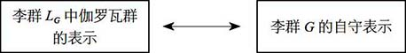
爱德华：我还是不明白，至少现在不明白。我换一个简单一点儿的问题，比如，SO(3)群的朗兰兹对偶群是什么？
德林费尔德：这个问题比较简单，那就是SO(3)的“双层覆盖”（double cover）。你还记得杯子游戏吗？
爱德华：杯子游戏？嗯，我记得。
镜头切换至内景：哈佛研究生的聚会。
十几名20岁出头的学生一边喝着啤酒或葡萄酒，一边聊天。爱德华正在与其中一名学生交谈。
学生：我来告诉你怎么玩吧。
这个学生拿出一个装有葡萄酒的塑料杯，将其托在右手掌上。然后，他开始转动手掌和胳膊（如下文中的一组照片所示）。转了一圈（360度）之后，他的胳膊呈扭曲状。他让茶杯口一直保持朝上，接着转动他的胳膊和手掌，又转了一整圈。太神奇了，他的胳膊和茶杯竟然回到了转动之前的样子。
另一名学生：我听说菲律宾有一种传统的葡萄酒舞蹈，跳舞时他们的双手做的就是这样的动作。
他端起两杯啤酒，试着同时转动双手，但是他的手无法托稳杯子，啤酒洒了出来。大家哄堂大笑。
镜头切换至内景：德林费尔德的办公室。
德林费尔德：这个小游戏反映了一个事实：群SO(3)有一个闭合的非凡路径，如果把这个路径旋转两次，它就会变成平凡路径。
爱德华：我明白了。托着杯子转动第一圈时，胳膊会扭曲，这就像群SO(3)的非凡路径。
他端起桌上的那杯茶，开始做胳膊转动第一圈的动作。
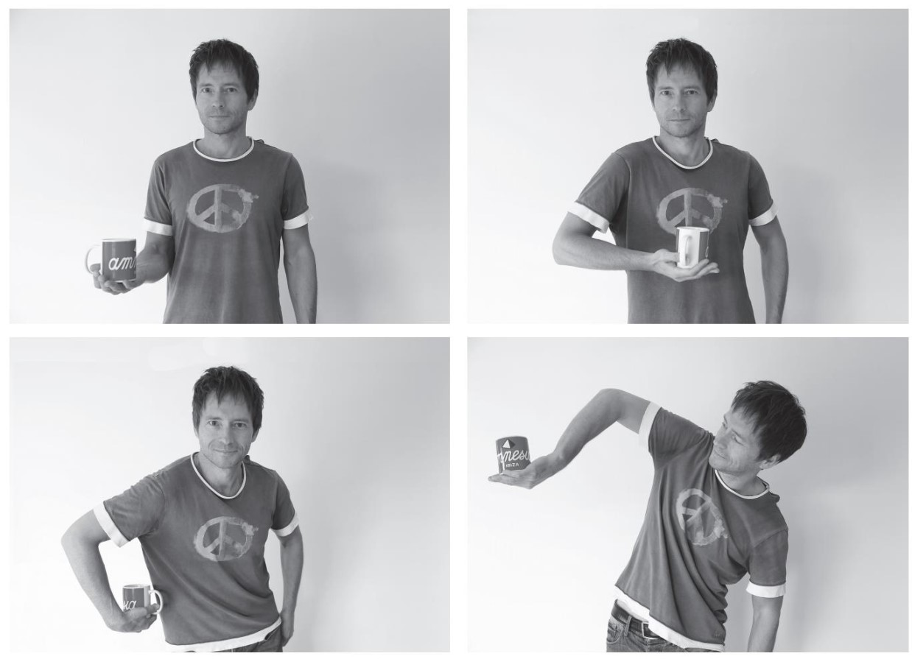
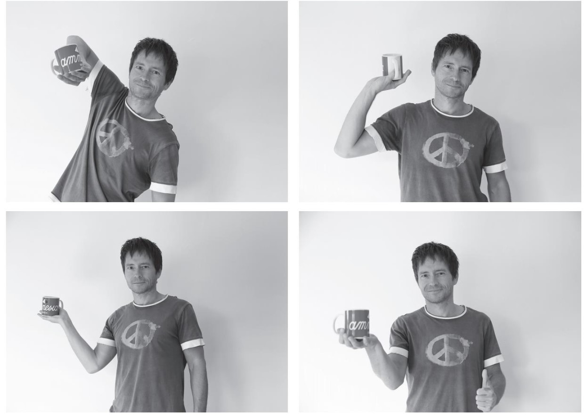
爱德华：你以为转动第二圈会使胳膊扭曲得更厉害。但实际上，在转了第二圈之后，胳膊反而一点儿也不扭曲。
爱德华完成了这个动作。
德林费尔德：完全正确。
爱德华：这与朗兰兹对偶群有什么关系呢？
德林费尔德：群SO(3)的朗兰兹对偶群就是群SO(3)的双层覆盖，因此……
爱德华：因此，对于群SO(3)的每个元素而言，在朗兰兹对偶群中都有两个元素与之对应。
德林费尔德：正因为如此，这个新的群不存在任何闭合的非凡路径。
爱德华：也就是说，朗兰兹对偶群可以消除那些滑稽有趣的扭曲。
德林费尔德：没错。乍一看，似乎区别不大，但实际上，区别非常明显。比如，电子、夸克等构建物质的基本粒子，与光子等承载基本粒子相互作用的粒子，在性质上存在巨大的差异。对于更一般的李群来说，它与其朗兰兹对偶群之间的差异更显著。事实上，在很多情况下，这两个对偶群之间没有明显的联系。
爱德华：对偶群为什么会出现在朗兰兹关系中呢？真的太神奇了！
德林费尔德：这个原因我们还不清楚。
朗兰兹对偶群可以把李群成对地联系起来：对于每个李群G，都存在一个朗兰兹对偶群LG，而且LG的对偶群也是李群G。朗兰兹纲领在两种不同类型的对象（一个对象属于数论领域，另一个属于调和分析领域）之间建立了联系，这已经够让人们吃惊的了。而将对偶的两个李群G和LG，置于这种联系的两端，就更加令人难以置信了。
我们在前面讨论过，朗兰兹纲领把数学王国中的一个个独立的大陆连接在一起。假如我们把这些大陆类比成欧洲和北美洲，我们就有办法使欧洲与北美洲的居民形成一一对应的关系。而且，假设在这种关系中，体重、身高与年龄等属性能够严格地相互对应，但是性别却错位对应：每名男性对应一名女性，每名女性则对应一名男性。李群与其朗兰兹对偶群的对应关系，就与这种错位对应十分相似。
这种错位对应实际上是朗兰兹纲领最为神秘的一个方面。我们已经掌握了好几种描述对偶群形成的方法，但是我们仍然不清楚其形成的缘由，因此，我们试图（通过韦伊的“罗塞塔石碑”）将朗兰兹纲领推广到数学学科的其他分支，以及量子物理领域中去。具体的推广过程，我们将在下一章中讨论。我们希望找出更多实例，通过研究朗兰兹对偶群的形成过程，找到更多线索，帮助我们了解这些对偶群形成的缘由及其含义。
我们现在来看一下韦伊“罗塞塔石碑”中涉及黎曼曲面的右侧轨道。在上一章中我们已经讨论过，朗兰兹关系到这个轨道就结束了。根据角色安排，与李群G有关的自守函数（或自守表示）这个角色由“自守层”来扮演。研究发现，这些自守层“生活”在与黎曼曲面X和群G有关的某个空间中。这个空间被称作X上的G丛（G-bundle）模空间，其具体含义跟现在我们讨论的内容关系不大。第9章已经介绍过，构成朗兰兹关系的另一方是伽罗瓦群，该角色由该黎曼曲面的基本群扮演。我们发现，几何朗兰兹关系（亦称几何朗兰兹对应）可以用下图表示：
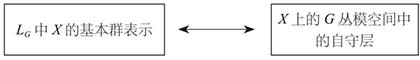
这意味着，对于LG中基本群的每个表示，我们都能找到一个自守层与之对应。至于如何完成这个操作，德林费尔德有一个新颖的想法。
内景：德林费尔德的办公室。
德林费尔德：因此，我们必须找到构建这些自守层的系统性方法。我认为卡茨–穆迪代数表示可以实现这个目标。
爱德华：为什么？
德林费尔德：我们现在研究的是黎曼曲面，黎曼曲面可能有边线，边线会构成圈。
德林费尔德在黑板上画了一幅图。
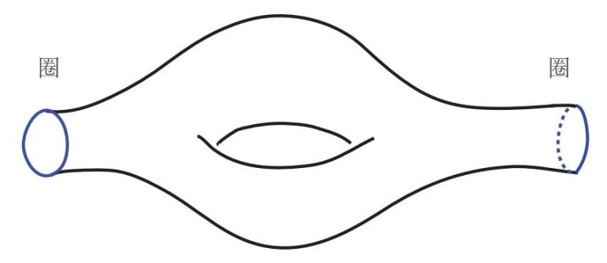
德林费尔德：黎曼曲面上的圈可以使我们联系到圈群，进而联系到卡茨–穆迪代数。通过这种联系，我们可以对卡茨–穆迪代数表示进行转换，使其变成该黎曼曲面上G丛模空间中的层。细节这里就不讨论了，整个过程我用这幅示意图来表示。
他在黑板上画了一幅示意图。
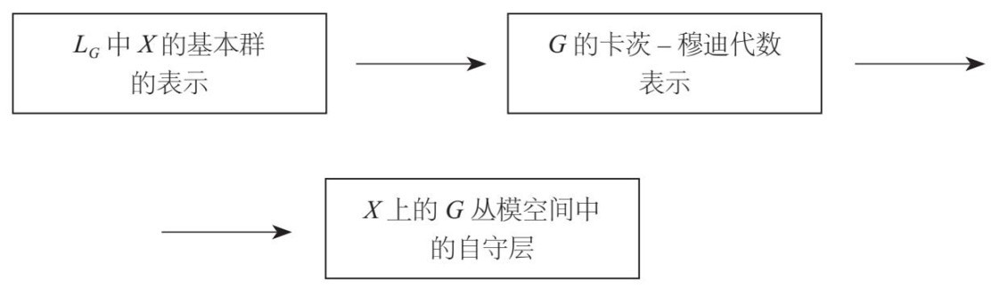
德林费尔德：我知道图中第二个箭头的含义，但我不知道应该如何理解第一个箭头。费金向我介绍了你在卡茨–穆迪代数表示领域的研究，我认为你可以把那些研究应用到这里。
爱德华：但是，李群G的卡茨–穆迪代数表示应该对朗兰兹对偶群LG“有所了解”才对啊。
德林费尔德：没错。
爱德华：这怎么可能呢？
德林费尔德：是啊，这就是你要解决的问题。
在我看来，这段对话有点儿像电影《黑客帝国》里尼奥与墨菲斯的对白。这个任务既让我觉得兴奋，又让我有点儿担心：我真能在这个领域有所发现吗？
为了向大家解释我解决这个问题的方法，我先要解释构建黎曼曲面基本群表示的一个有效方法。我们通常会利用微分方程来实现这个目的。
微分方程是将函数与其导函数结合起来的一种方程式，我以在笔直公路上行驶的汽车为例来解释微分方程。公路有一个坐标，我们把它记作x，在时间点t上汽车所处的位置用函数x(t)来表示，例如x(t)=t2。
汽车的速率是汽车行驶过的距离与其所花时间Δt的比值：
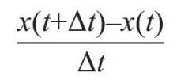
如果汽车匀速行驶，那么我们所取的Δt值对结果不会有影响。但是，如果汽车的速度在变化，那么Δt越小，所得结果就越接近于汽车在时间点t上的速度。为了准确地计算出汽车在该时点的即时速度，我们需要计算当Δt趋近于0时该比值的极限。该极限就是x(t)的导函数，记作x'(t)。
例如，如果x(t)=t2，则x'(t)=2t。其一般形式为，如果x(t)=tn，那么x'(t)=ntn–1。这个结果不难得出，但在这里我们不做讨论。
自然界的很多定理都可以用微分方程（或者包含函数及其导函数的方程）来表示。例如，我们在下一章要讨论的描述电磁现象的麦克斯韦方程组就是微分方程，描述万有引力的爱因斯坦方程也是微分方程。事实上，大多数数学模型（无论涉及物理、生物、化学还是金融市场）都用到了微分方程。即使是对于涉及个人财务状况（例如如何计算复利）的最简单的问题，我们也需要使用微分方程。
下面是微分方程的一个例子：
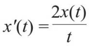
函数x(t)=t2是该微分方程的一个根。x'(t)=2t，2x(t)/t=2t2/t=2t，也就是说，将x(t)=t2代入方程式两边，会得到相同的结果——2t。此外，我们还发现，该方程式的所有根都具有x(t)=Ct2的形式，其中C是与t无关的实数（C表示“常数”）。例如，x(t)=5t2是一个根。
同理，下面的微分方程：
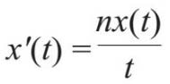
其根的形式为x(t)=Ctn，其中C为任意实数。
在上述方程式中，n可以为负整数，此时方程式仍然有意义，x(t)=Ctn也有意义。但是，该方程式在t=0时没有意义，因此，我们不考虑t=0的情况。在t不等于零的情况下，n可以是任意有理数，甚至是任意实数。
在该微分方程的原始表达式中，我们把t定义为时间，因此我们假设t是实数。现在，我们假设t是复数，因此t的表达式为r+s，r和s为实数。我们在第9章讨论过，复数可以借助坐标数字r和s表示成平面上的点。t一旦取值为复数，x(t)实际上就是平面上的函数，准确地说，应该是去掉了一个点的平面，因为在t=0时，函数x(t)没有意义。t=0时的点就是平面的原点（坐标r和s都等于零），所以，x(t)是去掉了一个点（即原点）的平面的函数。
我们在第9章讨论过，基本群的元素是闭合路径。现在，我们考虑去掉一个点的平面的基本群。在这种情况下，所有闭合路径都有一个“回转数”（winding number）：路径围绕被去掉的那个点运动的圈数。如果路径是逆时针方向的，我们就给赋予该数字正值，如果路径是顺时针方向是，则赋予该数字负值。下图给出了回转数为+1和–1的闭合路径。
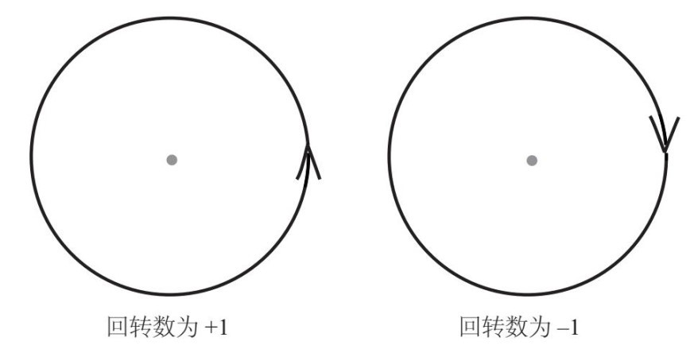
对于旋转两周然后与自身相交并回到起始点的路径，其回转数为+2或–2。其他的复杂路径依此类推。
下面，我们回到微分方程：
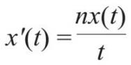
其中，n是任意实数，t为复数。该方程式有一个根为x(t)=tn，不过，这里会有一个令人吃惊的发现：如果n不是整数，那么，在我们在沿着平面上一条回到起始点的闭合路径计算方程根的值时，方程根在终点处的值，不一定等于它在起点处的值，而是等于起点处的值与一个复数的乘积。在这种情况下，我们说该方程根在该路径上具有单值性。
如果有人说，我们在运动了一整圈之后所处的位置发生了变化，那么我们可能会认为这个说法有悖常识，甚至自相矛盾。但是，实际情况的确像他们说的那样，这取决于我们对运动一整圈的理解。我们可以穿过一个闭合路径，回到某个属性（例如空间位置）上的同一点，但是，在运动的过程中，其他属性却完全有可能发生改变。
我们来看下面这个例子。2010年3月14日，瑞克在一次晚宴上遇到了伊尔莎，并对她一见钟情。伊尔莎虽然对瑞克并没有多少特别的感觉，但她同意与后者交往。在一次又一次约会之后，伊尔莎逐渐爱上了瑞克。是啊，他风趣诙谐，反应机敏，又非常关心她。很自然地，伊尔莎就坠入了爱河，她甚至在脸谱网上把自己的状态改为“热恋中”。瑞克同样如此。时光飞逝，到了2011年3月14日，距他们第一次见面已经过去一年了。从日历上来看（如果不考虑年份，只看日期），瑞克和伊尔莎经历了一个完整的周期。但是，两人的情况与最初时已经不同了。他们相遇时，瑞克爱上了伊尔莎，而伊尔莎并没有爱上瑞克。一年后的情况就不一样了：他们对对方的爱可能是相当的；也有可能是伊尔莎爱得死心塌地，而瑞克的爱情则是不咸不淡；甚至有可能瑞克已经不爱伊尔莎了，转而与别人秘密约会。我们无从知晓这些，我们需要关注的是，尽管他们回到了日历上的同一个日期——3月14日，但他们对对方的感情却发生了显著的变化。
不过，我父亲却认为这个例子容易让人迷惑，因为我们会形成错觉，以为瑞克和伊尔莎回到了以前的某个时间。这是不可能的，我强调的只是某种具体属性，即日期。从这个意义上看，从2010年3月14日到2011年3月14日，的确是一个完整的周期。
不过，考虑空间的闭合路径可能会取得更好的效果。因此，我们假设瑞克和伊尔莎交往后他们便一起周游世界。在旅途中，他们的感情不断升温，等他们回到出发地点（他们的家乡）时，他们彼此之间的感情已经发生了变化。
在第一种情况下，我们有一条闭合的时间路径（具体地说，就是日期），而在第二种情况下，我们有一条闭合的空间路径。但是，我们经由两条不同的路径得出的结论是相似的：双方的关系可能沿着一条闭合路径发生了变化。这两个假设反映了一个现象，即爱情的单值性。
在数学上，我们可以用数字x表示瑞克对伊尔莎的感情，用数字y表示伊尔莎对瑞克的感情。因此，在各个时点上他们的相互关系就可以表示成平面上坐标为（x，y）的点。例如，在第一种假设中，他们第一天相遇时的关系坐标为（1，0）。然后，当他们的相互关系沿一条闭合路径（时间或空间路径）运动时，点的位置也会随之变化。因此，他们的相互关系可以利用xy平面上的曲线表示，单值性表明曲线的起点与终点的值是不同的。
我们再举一个不那么浪漫的例子。假设你沿着螺旋形楼梯爬了一层楼。从你在地面上的投影来看，你走的路线是一个环形。但是，另一个属性（海拔高度）也改变了：你爬高了一层。这也是单值性的表现。我们可以把这个例子与第一个例子联系起来：日历就像一个螺旋，一年365天就像地面上的环形，而年份则像海拔高度。因此，从一个给定的日期，例如2010年3月14日开始，运动到一年后的同一个日期，这种变化与跟爬楼梯十分相似。
我们接着讨论上述微分方程的根的情况。平面上的闭合路径就像你运动轨迹的投影在地面上形成的那条闭合路径，而方程式的根则像你在楼梯上所处的海拔高度。从这个角度看就不难理解，在转了一整圈之后，为什么方程式的根变得与初始值不同了。
计算这两个值的比值，我们就能得到方程式的根在这条路径上的单值。研究发现，该单值性可以被视为循环群的一个元素。举个例子，假设我们可以把手杖糖弯曲变成环形，糖上的红色条纹就形成了一个圈，沿着红色条纹的路径则像上述平面上的闭合路径。因此，红色条纹圈就是我们讨论的方程式的根。我们沿着这条红色条纹在糖上走一圈，通常会回到一个与起点不同的位置。两者位置之间的差异就像方程根的单值性，对应的是将糖圈旋转某个角度的操作。
对于回转数为+1的闭合路径而言，其单值是循环群中与360n度旋转操作相对应的元素。（例如，如果n等于1/6，那么我们为这条路径赋值360/6 =60度。）同理，对于回转数为ω的闭合路径而言，其单值就是360ωn度旋转操作。
上述讨论表明，在去掉一个点的平面上，不同路径的单值会产生循环群中基本群的一个表示。在对这个结果进行推广的过程中我们发现，通过计算任意黎曼曲面（跟上述情况一样，该曲面可能会去掉某些点）上微分方程的单值，我们可以构建出该曲面基本群的表示。这些微分方程比上面讨论的更复杂，但是在曲面上某个点的邻域，它们的复杂程度与我们所讨论的基本差不多。我们可以用类似的方法，通过计算更复杂的方程根的单值，为循环群以外的李群中的给定黎曼曲面构建基本群表示。例如，我们可以在群SO(3)中构建基本群表示。
我们接着讨论我遇到的这个难题：从李群G着手，求取对应的卡茨–穆迪代数表示。德林费尔德的猜想需要找出该卡茨–穆迪代数表示与朗兰兹对偶群LG中基本群表示之间的联系。
第一步是，找到合适的、单值在LG中取值的微分方程，用它来取代基本群表示。这个步骤更贴近代数的特点，因而与卡茨–穆迪代数领域也更接近。早在德林费尔德被“放逐”到乌法时，他就和索科洛夫合作，提出了适用于该步骤的微分方程类型（从本质上看，这些方程式对应的是我们上文讨论的去掉了一个点的平面）。随后，贝林森和德林费尔德将这个成果推广至任意黎曼曲面，并将所得到的微分方程命名为“oper”（算子方程）。
我在撰写博士论文时，以我与伯亚在莫斯科共同取得的研究成果为基础，以与朗兰兹对偶群LG相对应的算子方程为参数，成功地构建了李群G的卡茨–穆迪代数表示。两者之间的确存在某种让人意想不到的联系：与李群G相关的卡茨–穆迪代数竟然“认识”朗兰兹对偶群LG，这与德林费尔德猜测的情况不谋而合。这样一来，他的研究计划就变成了下图所示的情况：
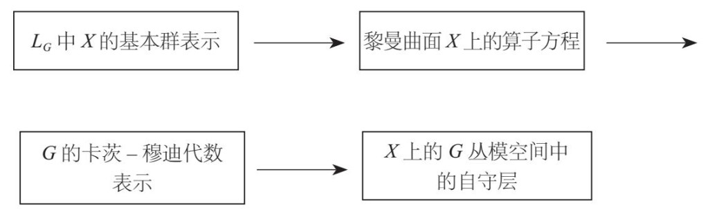
要证明我得出的这个结论，在技术上颇为棘手。我能解释朗兰兹对偶群是如何形成的，但是，即使在20多年后的今天，我仍然无法弄清楚其中的缘由。我解决了德林费尔德交给我的任务，但是一想到某个东西凭空出现，而我却无法了解其来龙去脉，我就会耿耿于怀，无法体会问题最终得到解决时的那种满足感。从那以后，寻找更完整的解释就成了我研究工作的一个内容。
这种情况并不少见。一个人证明了某个猜想，其他人就会验证这个证明过程，新的研究成果又会使该领域取得新的进展。但是，要真正了解这个领域，却需要几年甚至几十年的时间。我知道，即使我无法找到正确答案，我后面的一代又一代数学人也会继续攻克这个难关。不过，我自然更希望我能亲自完成这项任务。
贝林森和德林费尔德随后又利用我的博士论文中提出的这个猜想，（在韦伊“罗塞塔石碑”右侧的轨道上）成功地构建出美丽的几何学意义上的朗兰兹关系。他们的杰出成果为朗兰兹纲领的研究打开了新的篇章，在这个领域提出了颇具洞察力的新想法，也进一步拓展了这一研究领域。
后来，我在专著《圈群的朗兰兹对应》（Langlands Correspondence for Loop Groups）中对我在这个领域的研究成果[其中有一部分成果是我与伯亚合作完成的，还有一部分成果是我与丹尼斯·盖茨哥利（Dennis Gaitsgory）合作完成的]进行了总结，这本书的英文版由剑桥大学出版社于2007年出版。20年前的那个晚上，我离开了伯亚的别墅，在回家的列车上创造了第一个卡茨–穆迪代数自由场实现公式。在埋头计算时我几乎没有意识到，从此以后我会走上研究朗兰兹纲领的漫漫征程。
在我的那本书中，我选用了自己最喜爱的诗人爱德华·埃斯特林·卡明斯（E. E. Cummings）在1931年写下的诗句作为引语。
晶莹剔透的几何学迈着轻盈的步履
从骄傲孤寂的代数王国穿梭而过
却与一母所生的冷冰冰的算术撞了个满怀……
在我眼中，这几句诗描述的正是我们在研究朗兰兹纲领时所追求的目标：将几何学、代数和算术（即数论）和谐地统一起来。这是现代社会的炼金术。
贝林森和德林费尔德的研究成果解决了数学领域中几个长期悬而未决的问题，同时又提出了一些新问题。数学研究具有这样的特点：每一次取得的研究成果都会把未知领域的面纱撩起一个角，但我们看到的却并非最终答案，而是新的问题或新的方向。因此，每一个发现都不会让我们功成身退，而是激励我们继续鼓起干劲儿，在求索的道路上大步前进。
* * *
1991年5月，我参加了哈佛大学的博士生毕业典礼。这次毕业典礼对我有着特别的意义，因为在毕业典礼上发言的是爱德华·谢瓦尔德纳泽（Eduard Shevardnadze），他是苏联政治经济改革的策划者之一。此前不久，为了抗议波罗的海几个国家发生的暴力事件，威慑刚刚露头的独裁统治，他愤然辞去了苏联外交部部长的职务。
在毕业典礼的那个阳光灿烂、喜气洋洋的日子里，我只想对他说声“谢谢”，我要感谢他帮助了我，也帮助了祖国的千千万万的同胞。
他的发言结束后，我走上前去告诉他，得益于他发起的苏联政治经济改革，我获得了哈佛大学的博士学位。他操着带有迷人的格鲁吉亚口音的俄语，笑着对我说：“我非常高兴听到这个消息。祝愿你在研究中取得丰硕成果。”他停顿了一下，接着又说：“同时，祝你的生活美满幸福。”
第二天，我乘飞机去了意大利，维克多·卡茨邀请我出席他和意大利同事克拉多·德孔奇尼（Corrado De Concini）在比萨组织的一个会议。之后，我从比萨飞往科西嘉岛参加第二个会议，随后飞到日本京都，出席第三个会议。出席这些会议的都是对卡茨–穆迪代数及其在量子物理中的应用感兴趣的数学家和物理学家，我报告了我刚刚完成的研究项目。大多数与会者都是第一次听说朗兰兹纲领，他们无一例外地表现出浓厚的兴趣。现在回想当时的情境，我惊讶地发现，这些年来数学领域已经发生了翻天覆地的变化。如今，朗兰兹纲领已经被看作现代数学的一个基石，是众多学科中人们耳熟能详的一个概念。
这是我的第一次环球旅行。我接触到不同的文化，而数学是通用语言，把我们彼此联系在一起。一切都是那么美好，整个世界就像一个巨大的万花筒，蕴藏着无限的可能性。